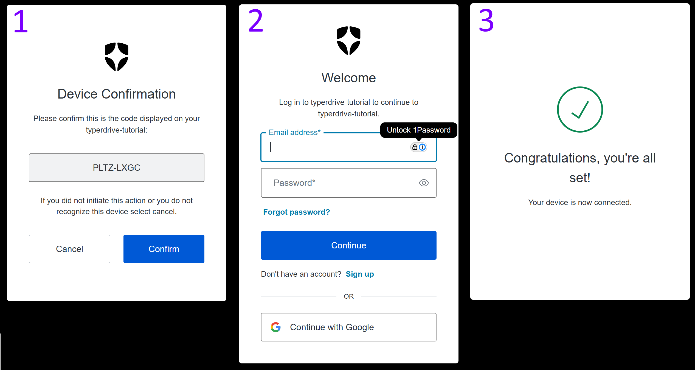

Introducing Typerdrive: Develop API-Connected Typer Apps at Lightspeed
TLDR
I created a package to extend Typer with some great features for building CLIs that communicate with APIs.
During my time as an engineer working primarily with Python, I've written a a fair number of CLIs powered by Typer. One type of project that has been popping up for me a lot lately involves writing CLI programs that interface with RESTful APIs. These are pretty common these days with so many service companies offering fully operational battlestations...I mean, platforms that can be accessed via API.
I've established some pretty useful and re-usable patterns in building these kinds of apps, and I keep finding new ways to improve both the developer experience and the user experience. Every time I go about porting some feature across to a new or old CLI, I wish there was a library that wrapped them all up in a nice package. Now, there is:


She may not look like much, but she’s got it where it counts, kid. I’ve made a lot of special modifications myself. --Han Solo
These are the challenges I found myself facing repeatedly when building CLIs that talk to APIs:
- Settings management: so you're not providing the same values as arguments over and over
- Cache management: to store auth tokens you use to access a secure API
- Handling errors: repackaging ugly errors and stack traces into nice user output
- Client management: serializing data into and out of your requests
- Logging management: storing and reviewing logs to diagnose errors
typerdrive wraps all this up into an interface that's easy for users and developers as well.
Each of these feature is fully documented in the
typerdrive docs. There are also a full set of
examples and
demos showing how to use them. Still, I thought it
would be good to show how they could be used in actual app. I'm going to go over that with you in this walkthrough!
Setup
First of all, the complete code for the "tutorial" app is available in its own github repository called typerdrive-tutorial. So, if you want to just dig in and see how it works, you can start there.
I'm going to incrementally build this code as I walk through the features of typerdrive and how they are useful for
both users and developers.
This walkthrough will show you how to use typerdrive to build a CLI that accesses secured API endpoints. To make
this setup as easy as possible, I'm using a FastAPI instance secured with
armasec.
Bias alert
I wrote armasec, so my opinion on how easy it is to use is probably a bit biased.
So, to prepare things for this app, I followed the instructions here to set up
Auth0 with armasec as documented in
this guide.
To keep things lean and simple, I skipped the steps involved with setting up RBAC. Enabling RBAC won't hurt anything, but it's not necessary for this tutorial.
If you want to follow along on your own machine, you will need to complete the setup of an Auth0 client for yourself. You can do this for free with Auth0.
If you are feeling ambitious, you could do all this with a local Keycloak instance as well by following this guide. Note that the URLs used to access Keycloak are different than those for Auth0, so you will need to modify the code provided in this walkthrough in some places.
OK, once you have an OIDC (Auth0 or Keycloak) provider setup, you are ready to follow along.
The API
The API itself is really basic. It has two endpoints:
/unsecured: allows access to anyone/secured: requires a logged in user
The code for this API is really straightforward:
If you are following along, you will have to replace the Armasec values for domain and audience with whatever you
selected during the Auth0 setup.
That's it. This FastAPI app will use armasec to secure the /secured endpoint. The /unsecured endpoint has no such
protection.
Start the API up by running:
This will start up a local instance of the API running on port 8000. To see the available endpoints, you can open a
browser with http://localhost:8000/docs
That's it. The API is ready to receive both secured and unsecured requests. Let's test it out by hitting the unsecured endpoint with cURL:
$ curl -i http://localhost:8000/unsecured
HTTP/1.1 200 OK
date: Mon, 12 May 2025 16:13:08 GMT
server: uvicorn
content-length: 42
content-type: application/json
{"message":"Accessed unsecured endpoint!"}
Great! The API is working. Of course, if you try to access the secured endpoint it will give you a 401 because you're not (yet) providing an auth header:
$ curl -i http://localhost:8000/secured
HTTP/1.1 401 Unauthorized
date: Mon, 12 May 2025 16:13:30 GMT
server: uvicorn
www-authenticate: Bearer
content-length: 30
content-type: application/json
{"detail":"Not authenticated"}
Great! The API is ready to process requests from the CLI.
Building the CLI
Now that the API is ready to go, we can start building our CLI with typerdrive.
Step 1: Create the CLI skeleton
In this tutorial, we will build a CLI that has two main commands:
login: Log in to Auth0 and get an access tokenaccess: Access secured or unsecured endpoints
More commands incoming
As we integrate typerdrive, more commands will become available, and those will be explained as we go.
Initial code
First, we'll set up the skeleton of our API with the two commands like so:
| cli.py | |
|---|---|
Now, this bare-bones CLI won't really do anything, it just prints a message for either command.
Running the commands
Let's try it out:
$ typerdrive-tutorial access
╭──────────────────────────────────────────────────────────────────────────────╮
│ │
│ Processing access command │
│ │
╰──────────────────────────────────────────────────────────────────────────────╯
The terminal_message() function imported from typerdrive just prints nicely formatted messages with
rich. You can make the output much fancier, as you will see
later in this walkthrough.
Step 2: Use an http client to access API endpoints
Let's start building out functionality by using an http client to access the API endpoints.
First, we'll use a vanilla httpx client to issue requests to the API.
Why httpx and not requests?
I vastly prefer httpx over requests; that's why this tutorial and typerdrive itself uses it.
typerdrive includes httpx as a dependency, so you will not need to install it separately.
Updated code
Let's update the access() function like this:
Let's walk through what's going on here:
First, we add an Endpoint enum so that we can add a
Typer argument that controls which endpoint we
send a request to. If you run the CLI with the --help command, you can see that it requires you to supply either
"unsecured" or "secured" for this argument:
$ typerdrive-tutorial access --help
Usage: typerdrive-tutorial access [OPTIONS] ENDPOINT:{unsecured|secured}
╭─ Arguments ──────────────────────────────────────────────────────────────────╮
│ * endpoint ENDPOINT:{unsecured|secured} [default: None] [required] │
╰──────────────────────────────────────────────────────────────────────────────╯
╭─ Options ────────────────────────────────────────────────────────────────────╮
│ --help Show this message and exit. │
╰──────────────────────────────────────────────────────────────────────────────╯
The request is sent to the API via httpx at the chosen endpoint. Notice that we included
response.raise_for_status()? This will simply throw an exception if any error responses are returned. Error responses
have http status codes in the 400
and 500 range.
Next, we unpack the "message" from the response payload and show it to the user with a fancier version of
terminal_message().
Running the commands
Let's try it out:
$ typerdrive-tutorial access unsecured
╭─ Successfully connected to API ──────────────────────────────────────────────╮
│ │
│ API response: {'message': 'Accessed unsecured endpoint!'} │
│ │
╰─ Status Code: 200 ───────────────────────────────────────────────────────────╯
Awesome! We connected to the API and got a 200 response from the /unsecured endpoint. This is exactly what we wanted
to see. So, now what happens when we hit the /secured endpoint?
$ typerdrive-tutorial access secured
╭─────────────────── Traceback (most recent call last) ────────────────────────╮
│ /home/dusktreader/git-repos/personal/typerdrive-tutorial/src/typerdrive_tuto │
│ rial/cli.py:19 in access │
│ │
│ 16 @app.command() │
│ 17 def access(endpoint: Endpoint): │
│ 18 │ response = httpx.get(f"http://localhost:8000/{endpoint}") │
│ ❱ 19 │ response.raise_for_status() │
│ 20 │ message = response.json()["message"] │
│ 21 │ terminal_message( │
│ 22 │ │ message, │
│ │
│ ╭───────────────── locals ─────────────────╮ │
│ │ endpoint = <Endpoint.secured: 'secured'> │ │
│ │ response = <Response [401 Unauthorized]> │ │
│ ╰──────────────────────────────────────────╯ │
│ │
│ /home/dusktreader/git-repos/personal/typerdrive-tutorial/.venv/lib/python3.1 │
│ 3/site-packages/httpx/_models.py:829 in raise_for_status │
│ │
│ 826 │ │ } │
│ 827 │ │ error_type = error_types.get(status_class, "Invalid status co │
│ 828 │ │ message = message.format(self, error_type=error_type) │
│ ❱ 829 │ │ raise HTTPStatusError(message, request=request, response=self │
│ 830 │ │
│ 831 │ def json(self, **kwargs: typing.Any) -> typing.Any: │
│ 832 │ │ return jsonlib.loads(self.content, **kwargs) │
│ │
│ ╭─────────────────────────── locals ───────────────────────────────────────╮ │
│ │ error_type = 'Client error' │ │
│ │ error_types = { │ │
│ │ │ 1: 'Informational response', │ │
│ │ │ 3: 'Redirect response', │ │
│ │ │ 4: 'Client error', │ │
│ │ │ 5: 'Server error' │ │
│ │ } │ │
│ │ message = "Client error '401 Unauthorized' for url │ │
│ │ 'http://localhost:8000/secured'\nFor more"+80 │ │
│ │ request = <Request('GET', 'http://localhost:8000/secured')> │ │
│ │ self = <Response [401 Unauthorized]> │ │
│ │ status_class = 4 │ │
│ ╰──────────────────────────────────────────────────────────────────────────╯ │
╰──────────────────────────────────────────────────────────────────────────────╯
HTTPStatusError: Client error '401 Unauthorized' for url
'http://localhost:8000/secured'
For more information check:
https://developer.mozilla.org/en-US/docs/Web/HTTP/Status/401
This should be expected. Without a valid auth token, the secured endpoint will reject the request with a
401: Not Authenticated response. However, this is a very unfriendly message to show to your users. That stack trace
might be super valuable to you, a developer, who needs to find out what went wrong, but it will confuse the hell out of
any enduser that's using your app.
Step 3: Handling errors
It can be toilsome to handle error conditions to make sure that you are providing friendlier output for the end user. You will find yourself using the same code over and over to capture an error and re-format it nicely as well as exiting gracefully.
typerdrive provides
error handling that can make this much
easier for you and nice for your users as well.
Updated code
Let's update the code to add error handling:
Alright, let's talk through these changes. First, we are creating our own exception class. This is based off of
TyperdriveError which itself is a variant of a Buzz exception from
py-buzz. By default the
@handle_errors() decorator
will handle all TyperdriveError exceptions (including descendant exception classes). Instead of hitting your user with
an inscrutable stack trace and confusing error message, typerdrive will capture the error and provide a clear
explanation for your user.
Running the commands
Let's try it out:
$ typerdrive-tutorial access secured
╭─ Failed to access the API ───────────────────────────────────────────────────╮
│ │
│ Expected status code 200, but got 401 │
│ │
╰──────────────────────────────────────────────────────────────────────────────╯
That's much nicer for the user! Notice that the "subject" of the message is the string you passed to handle_errors().
The message shown in the box will be the TyperdriveError's message attribute.
This may be much better for the user, but for you as a maintainer it could be very hard to diagnose what went wrong. This time, it's an obvious 401 issue, but if you were getting a 400 here you would probably want to dig into the details a bit more.
Step 4: Add Logging
Logging is a great way to capture details about runtime issues. Setting it up isn't necessarily hard, but it does
involve some repetetive boilerplate. typerdrive provides a
logging feature that makes it very easy to
set up logging so that the messages are captured on disk in a sensible place and are easy to access. It even handles
log rotation to ensure that a single log file doesn't get
too large to manage.
Updated code
Let's update the code to enable logging and then talk through the changes:
If you were to run the commands as before, you wouldn't see any effect from these changes. Logs are being captured,
though, and typerdrive can help you examine them. First, though, let's discuss the changes.
After initializing the Typer app, we invoke the add_logs_subcommand() to add additional commands for managing logs to
our app. You can examine them with the --help() flag:
$ typerdrive-tutorial --help
Usage: typerdrive-tutorial [OPTIONS] COMMAND [ARGS]...
╭─ Options ───────────────────────────────────────────────────────────────────────────────╮
│ --install-completion Install completion for the current shell. │
│ --show-completion Show completion for the current shell, to copy it or │
│ customize the installation. │
│ --help Show this message and exit. │
╰─────────────────────────────────────────────────────────────────────────────────────────╯
╭─ Commands ──────────────────────────────────────────────────────────────────────────────╮
│ access │
│ login │
│ logs Manage logs for the app │
╰─────────────────────────────────────────────────────────────────────────────────────────╯
There we can see the new logs command, and we can dig into that deeper by running it with the --help flag as well:
$ typerdrive-tutorial logs --help
Usage: typerdrive-tutorial logs [OPTIONS] COMMAND [ARGS]...
Manage logs for the app
╭─ Options ───────────────────────────────────────────────────────────────────────────────╮
│ --help Show this message and exit. │
╰─────────────────────────────────────────────────────────────────────────────────────────╯
╭─ Commands ──────────────────────────────────────────────────────────────────────────────╮
│ clear │
│ show │
│ audit │
╰─────────────────────────────────────────────────────────────────────────────────────────╯
We'll dig into what these commands do in a moment, but let's return to the code changes.
Notice that we added a decorator for our access() command function called @attach_logging(). This enables the
logging magic added by typerdrive for the command function it decorates. Additionally, we added a
do_except=log_error argument to @handle_errors(). This will log the details of any handled error so we can examine
them after the fact. Finally, because loguru is a dependency of typerdrive, we can import it and use it in our
function to log our progress.
Running the commands
Now, let's start checking out those logs commands. First, we'll use the show command to see the current log:
This will immediately open the current log in your system page. The text it shows will look like this:
2025-05-12 12:27:53.050 | DEBUG | typerdrive.logging.attach:wrapper:42 - Logging
attached to typer context
2025-05-12 12:27:53.050 | DEBUG | typerdrive_tutorial.cli:access:27 - Attempting to
access api endpoint=<Endpoint.secured: 'secured'>
2025-05-12 12:27:53.130 | DEBUG | typerdrive_tutorial.cli:access:29 - Got
response.status_code=401
2025-05-12 12:27:53.134 | ERROR | typerdrive.exceptions:log_error:150 - Failed to access
the API -- TutorialError: Expected status code 200, but got 401
--------
Traceback:
File
"/home/dusktreader/git-repos/personal/typerdrive-tutorial/.venv/lib/python3.13/site-package
s/typerdrive/exceptions.py", line 85, in wrapper
return_value = func(*args, **kwargs)
File
"/home/dusktreader/git-repos/personal/typerdrive-tutorial/.venv/lib/python3.13/site-package
s/typerdrive/logging/attach.py", line 47, in wrapper
return func(ctx, *args, **kwargs)
File
"/home/dusktreader/git-repos/personal/typerdrive-tutorial/src/typerdrive_tutorial/cli.py",
line 30, in access
TutorialError.require_condition(
~~~~~~~~~~~~~~~~~~~~~~~~~~~~~~~^
response.status_code == 200,
^^^^^^^^^^^^^^^^^^^^^^^^^^^^
f"Expected status code 200, but got {response.status_code}",
^^^^^^^^^^^^^^^^^^^^^^^^^^^^^^^^^^^^^^^^^^^^^^^^^^^^^^^^^^^^
)
^
File
"/home/dusktreader/git-repos/personal/typerdrive-tutorial/.venv/lib/python3.13/site-package
s/buzz/base.py", line 103, in require_condition
return require_condition(
expr,
...<6 lines>...
Hey, there's a stack trace like we saw before! Only now, it's hidden from your end user and waiting to be examined
through the logs subcommand. Any log lines recorded by loguru will be recorded here; this includes log lines from your
app as well as internal logging from typerdrive (as you can see in the first entry).
Next, let's take a look at what the audit subcommand does:
$ typerdrive-tutorial logs audit
╭─ Current log files ──────────────────────────────────────────────────────────╮
│ │
│ 📂 /home/dusktreader/.local/share/typerdrive-tutorial/logs │
│ └── 📄 app.log (2.2 kB) │
│ │
╰─ Storing 2.2 kB in 1 files ──────────────────────────────────────────────────╯
You can see that this command shows you both where the logs are stored and how much disk is being used to store them. As
I mentioned earlier, typerdrive will automatically rotate (and compress) older log entries. By default, it will rotate
the log file once a week. Old log files are kept for a month (by default) before they are automatically removed. Both of
these behaviors can be tweaked by adjusting the
typerdrive configuration.
The final logs sub-command is clear. This command will delete all stored logging data, so use it with care!
The Typer.Context
You may have noticed that the code now includes an extra ctx parameter with type TyperContext. This is a device
used by Typer (and Click) to attach additional
data to the verequest context. typerdrive also uses it to attach its "manager" classes to the context to enable
extended behavior. You must include this parameter for typerdrive to work (currently). I'm hoping I can figure
out how to make it optional, but haven't arrived at a solution yet.
Step 5: Using the TypedriveClient
While things have been working great thus far by using httpx directly, typderdrive provides a
customized client (based on httpx) that has
some nice extended functionality.
Updated code
Let's switch the code over to use this TyperdriveClient instead of httpx and then talk through the changes:
The first thing to note here is that we have created a new
Pydantic model that will be used to capture the data returned
from the API. In the case of the unsecured endpoint, the data returned is not very complex at all. When you are
working with real, production APIs, though, the schema of responses can get quite complicated. It is really useful to be
able to deserialize a large JSON blob into Pydantic objects and validate the data at the same time. You'll see a
little more complex example of using a Pydantic model to extract an API response when we implement the login method.
Next, you should notice that we are getting an instance of a TyperdriveClient as a parameter to our access() command
function through the @attach_client() decorator. By providing a keyword argument we are doing two things at once:
- Establishing a
base_urlfor the new client - Providing the name of the client that will be matched to a parameter of the
access()command function.
To get access to a TyperdriveClient in this way, you need to provide an argument to your command function with the
type TyperdriveClient and name that matches one provided in @attach_client()
Because we've supplied a base_url for the client, we can give just the URL path after the base for our request. In
this case it is just whichever endpoint we select with the endpoint parameter.
By providing an expected_status argument, we are instructing the TyperdriveClient to only accept responses with
that exact status code. If any other code is receeved, a ClientError (derived from TyperdriveError) will be raised.
Our error handling will catch such an error and give a polite response to the user.
Finally, the get_x() method will deserialize the response data into an instance of the response_model we provided.
Although the explicit cast() we use here is not necessary for things to work, it helps static type checkers understand
that the value returned from the function will be an instance of APIRespnose.
Running the commands
OK, let's try it out:
$ typerdrive-tutorial access unsecured
╭─ Successfully connected to API ──────────────────────────────────────────────╮
│ │
│ Accessed unsecured endpoint! │
│ │
╰──────────────────────────────────────────────────────────────────────────────╯
No surprises here. The request was successful, and we access the message through the response object.
Now, let's hit the secured endpoint:
╭─ Failed to access the API ───────────────────────────────────────────────────╮
│ │
│ Got an unexpected status code: Expected 200, got 401 -- Unauthorized │
│ │
╰──────────────────────────────────────────────────────────────────────────────╯
This time, the message is a bit different. Because the status code didn't match, we get an error message that explains
the situation nicely. If we peek at the logs (with logs show), we'll see some extra info logged by the client:
2025-05-12 13:22:30.554 | DEBUG | typerdrive_tutorial.cli:access:42 - Attempting to
access api endpoint=<Endpoint.secured: 'secured'>
2025-05-12 13:22:30.554 | DEBUG | typerdrive.client.base:request_x:26 - Processing GET
request to http://localhost:8000/secured
2025-05-12 13:22:30.554 | DEBUG | typerdrive.client.base:request_x:53 - Issuing request
2025-05-12 13:22:31.212 | DEBUG | typerdrive.client.base:request_x:57 - Checking
response for expected_status=200
2025-05-12 13:22:31.213 | ERROR | typerdrive.exceptions:log_error:150 - Failed to access
the API -- ClientError: Got an unexpected status code: Expected 200, got 401 --
Unauthorized
--------
Traceback:
File
"/home/dusktreader/git-repos/personal/typerdrive-tutorial/.venv/lib/python3.13/site-package
s/typerdrive/exceptions.py", line 85, in wrapper
return_value = func(*args, **kwargs)
File
"/home/dusktreader/git-repos/personal/typerdrive-tutorial/.venv/lib/python3.13/site-package
s/typerdrive/logging/attach.py", line 47, in wrapper
return func(ctx, *args, **kwargs)
File
"/home/dusktreader/git-repos/personal/typerdrive-tutorial/.venv/lib/python3.13/site-package
s/typerdrive/client/attach.py", line 76, in wrapper
return func(ctx, *args, **kwargs)
File
"/home/dusktreader/git-repos/personal/typerdrive-tutorial/src/typerdrive_tutorial/cli.py",
line 45, in access
api.get_x(
~~~~~~~~~^
...
Step 6: Adding app settings
In the building stages of a new CLI app, you often don't begin development by connecting to the same API URL that your
app access in production. There may also be other ways that the URL for the API may differ throughout the lifetime of
your CLI such as region, subdomain, API versions, etc. Thus, it's usually not the best idea to have the API URL
hard-coded in your app. To allow for runtime configuration of your app for this and other purposes, typerdrive
provides a settings management feature
to set, adjust, and view settings values within the CLI itself.
Updated code
Let's see how we can add this functionality into our app and then we'll talk through the changes:
Here you can see that we've defined a Settings Pydantic model that will be used to define the settings that our CLI
app needs. The model will also be used to validate the settings values that users will provide. Additionally, we defined
an Environment enum to let us define which environment our CLI is working in.
Next, we use the add_settings_subcommand function to add sub-commands to set, update, and manipulate the app settings.
We'll take a look at those commands shortly.
Finally, for the access() command function itself, we are going to attach the app settings using the
@attach_settings() decorator. This allows us to specify a parameter of type Settings (this must match the settings
model class that was attached) to get access to the settings in the function body. We then updated the first log line to
reflect the settings.
It's also notable that the value passed to @attach_client() for the api parameter was changed. typerdrive will
first try to find a key in the app settings to use as the base_url for the client. This requires that the
settings are already attached, so the @attach_settings() decorator must come first.
Running the commands
Let's run the access command as-is and see what happens:
$ typerdrive-tutorial access unsecured
╭─ Failed to access the API ───────────────────────────────────────────────────╮
│ │
│ Initial settings are invalid: {'api_url': 'Field required', 'env': │
│ 'Field required'} │
│ │
╰──────────────────────────────────────────────────────────────────────────────╯
This is actually what you should see because we haven't actually defined any values for our settings, and we must
have a value for the api_url.
It's time to dig into the settings commands to resolve this. You can see the available commands with the --help flag:
$ typerdrive-tutorial settings --help
Usage: typerdrive-tutorial settings [OPTIONS] COMMAND [ARGS]...
Manage settings for the app
╭─ Options ────────────────────────────────────────────────────────────────────╮
│ --help Show this message and exit. │
╰──────────────────────────────────────────────────────────────────────────────╯
╭─ Commands ───────────────────────────────────────────────────────────────────╮
│ bind │
│ update │
│ unset │
│ reset │
│ show │
╰──────────────────────────────────────────────────────────────────────────────╯
First, let's view the current settings. For this, we will use the show sub-command:
$ typerdrive-tutorial settings show
╭─ Current settings ───────────────────────────────────────────────────────────╮
│ │
│ api-url -> <UNSET> │
│ env -> <UNSET> │
│ │
│ Settings are invalid: │
│ api-url -> Field required │
│ env -> Field required │
│ │
╰──────────────────────────────────────────────────────────────────────────────╯
Before we can attach the settings to our command without error, we need to provide some values for these required
settings. To do that, let's use the bind sub-command. Before we issue the command, let's check how it works with
--help:
$ typerdrive-tutorial settings bind --help
Usage: typerdrive-tutorial settings bind [OPTIONS]
╭─ Options ────────────────────────────────────────────────────────────────────╮
│ * --api-url TEXT [default: None] [required] │
│ * --env [dev|prod] [default: None] [required] │
│ --help Show this message and exit. │
╰──────────────────────────────────────────────────────────────────────────────╯
kebab-case and snake_case
At this point, a detail needs to be pointed out. Notice that the settings here appear in
kebab-case even though in the code
they are defined with snake_case.
This is due to how Typer coerces function arguments into CLI options which are usually kebab-case. This is a
little gotcha that you might need to watch out for!
Let's go ahead and define our settings using the bind command:
$ typerdrive-tutorial settings bind --api-url=http://localhost:8000 --env=dev
╭─ Current settings ───────────────────────────────────────────────────────────╮
│ │
│ api-url -> http://localhost:8000 │
│ env -> dev │
│ │
╰─ saved to /home/dusktreader/.local/share/typerdrive-tutorial/settings.json ──╯
Now our settings are valid! Let's go ahead and try the access command again to make sure that our app will use the
settings we expect:
$ typerdrive-tutorial access unsecured
╭─ Successfully connected to API ──────────────────────────────────────────────╮
│ │
│ Accessed unsecured endpoint! │
│ │
╰──────────────────────────────────────────────────────────────────────────────╯
Everything is working! Let's move on to the next typerdrive feature.
Step 7: Using the Cache
When you're making a CLI that needs to authenticate, you really need to have some way to hang on to the auth token you
are issued between commands so that you don't have to log in every single time you run your CLI app. This is where the
cache comes in. typerdrive provides a CacheManager that can store and retrieve data from the cache. It also stores
the data in a sensible location, and gives you the ability to check what's stored in the cache as well as clear it out
if you need to.
After all the changes we've made, we still can't access the /secured endpoint. In order to get access to that secured
output we need to log in to our OIDC service, secure a token, and use it in subsequent requests to the secured endpoint.
Let's update the code to allow login and secured access.
Updated code
This change introduces much more code, but it's really not that complicated. I'll walk you through it after I show you
the code. The source code for cli.py now looks like this:
| cli.py | |
|---|---|
1 2 3 4 5 6 7 8 9 10 11 12 13 14 15 16 17 18 19 20 21 22 23 24 25 26 27 28 29 30 31 32 33 34 35 36 37 38 39 40 41 42 43 44 45 46 47 48 49 50 51 52 53 54 55 56 57 58 59 60 61 62 63 64 65 66 67 68 69 70 71 72 73 74 75 76 77 78 79 80 81 82 83 84 85 86 87 88 89 90 91 92 93 94 95 96 97 98 99 100 101 102 103 104 105 106 107 108 109 110 111 112 113 114 115 116 117 118 119 120 121 122 123 124 125 126 127 128 129 130 131 132 133 134 135 136 137 138 139 140 141 142 143 144 145 146 147 148 149 150 151 152 153 154 155 | |
Let's start with the simple changes before we dive into the internals of the new, improved login function.
Updated Settings
First, we need to add some additional items to our Settings model. The auth_url will be the base_url for the Auth0
API. The client_id will be the unique ID we got while setting up Armasec with Auth0. The audience will also come
from the Auth0/Armasec setup. Let's go ahead and bind the values we need to our app's settings. Because we've already
provided some settings that we want to keep, we'll use the update sub-command instead of the bind sub-command:
$ typerdrive-tutorial settings update \
--auth-url=https://typerdrive-tutorial.us.auth0.com \
--client-id=ahU6---------------------------- \
--audience=typerdrive-tutorial
╭─ Current settings ──────────────────────────────────────────────────────────────────────────────────────╮
│ │
│ api-url -> http://localhost:8000 │
│ env -> dev │
│ auth-url -> https://typerdrive-tutorial.us.auth0.com │
│ client-id -> ahU6---------------------------- │
│ audience -> typerdrive-tutorial │
│ │
╰─ saved to /home/dusktreader/.local/share/typerdrive-tutorial/settings.json ─────────────────────────────╯
New cache sub-commands
Next, note that in the revised code, we're calling the add_cache_subcommand() function. This will add some commands to
our CLI that allow us to show the state of the cache and to clear it out if we need to:
$ typerdrive-tutorial cache --help
Usage: typerdrive-tutorial cache [OPTIONS] COMMAND [ARGS]...
Manage cache for the app
╭─ Options ────────────────────────────────────────────────────────────────────╮
│ --help Show this message and exit. │
╰──────────────────────────────────────────────────────────────────────────────╯
╭─ Commands ───────────────────────────────────────────────────────────────────╮
│ clear │
│ show │
╰──────────────────────────────────────────────────────────────────────────────╯
Data models
Our communication with the Auth0 API involves three specific structures, and we've defined three Pydantic classes to
capture this. The DeviceCodeRequest model describes the data we need to send when requesting a login. The
DeviceCodeResponse model describes that data that will be returned by Auth0 once it's validated our request for a
code. Finally, The TokenRequestData describes the data we need to send to request an auth token after we've logged in.
typerdrive allows us to provide these models to our API requests to allow for easy serialization and deserialization
as well as validation that the values are correct.
As with the other features, there is an @attach_cache() decorator that binds the cache to the command context. Again,
we get access to the cache through a function argument of type CacheManager. The CacheManager provides methods to
store and retrieve data in the cache.
The new login() function
Before we review the changes in the access() command function, let's go through the internals of the new login()
command function to see how we secure an auth token.
At a high level, the function does the following:
- Request a device code from Auth0
- Show a link to the user with the code embedded in it
- Wait for the user to complete the login process
- Retrieve the auth token from the API
- Store it in the cache.
Let's dig in a bit on each of those parts.
1. Requesting a device code
This is the code that fetches the device code:
device_code_data = cast(
DeviceCodeResponse,
auth.post_x(
"/oauth/device/code",
expected_status=200,
body_obj=DeviceCodeRequest(
client_id=settings.client_id,
grant_type="client_credentials",
audience=settings.audience,
),
response_model=DeviceCodeResponse,
),
)
To get a device code from Auth0, we are posting a request to the /oauth/device/code endpoint and providing the app's
client_id and audience. We get those from the settings that we bound to the app. We will always use the
grant_type="client_credentials", so that can be hard-coded. We are also taking advantage of the TyperdriveClient's
ability to use a Pydantic model instance to provide the POST body here by passing a DeviceCodeRequest instance to
the body_obj parameter. Finally, we provide DeviceCodeResponse as the response_model for the TyperdriveClient to
unpack the response data into.
2. Showing the user a login link
terminal_message(
f"Open {device_code_data.verification_uri_complete} in a browser to complete login",
subject="Complete login with browser",
)
Because the response provided a verification URI for us, we can just show a terminal message to the user containing
that. The URI will contain the device code that we received from the first request. Most modern terminals allow you to
click on a link to open it in a browser. For mine, I just have to hold ctrl and click the link.
3-5. Wait for login, retrieve auth token, store it in the cache
The next 3 steps are wrapped up in the final bit of code:
while True:
logger.debug("Attempting to retrieve a token")
response_data = cast(
dict[str, str],
auth.post_x(
"/oauth/token",
body_obj=TokenRequest(
grant_type="urn:ietf:params:oauth:grant-type:device_code",
device_code=device_code_data.device_code,
client_id=settings.client_id,
),
),
)
if "error" in response_data:
TutorialError.require_condition(
response_data["error"] == "authorization_pending",
f"Failed to fetch a token with device_code {device_code_data.device_code}",
)
logger.debug(f"Didn't get a token yet. Trying again in {device_code_data.interval} seconds")
sleep(device_code_data.interval)
else:
with TutorialError.handle_errors("Couldn't extract token from response"):
access_token = response_data["access_token"]
logger.debug(f"Received access token {access_token[:32]}...")
cache_manager.store_text(access_token, "auth/access.token")
break
For this walkthrough, we're going to loop forever until a user completes the login process. For a real app, you probably want the process to time out after some period of time. However, to keep things as simple as possible, we will just wait forever.
We check to see if the user has logged in yet by requesting an access token from the Auth0 api at the /oath/token
endpoint. Again, we hard-code the grant_type and provide the client_id we configured in the app settings. The last
piece provided is the device_code we received in the first request.
This time, though, we do not provide a response_model or an expected status because we need to check the error data if
the API returns a non 200 status. Instead, the post_x() function will return a plain dictionary which we can pull the
error from. If this error is exactly "authorization_pending", then we know that the user hasn't yet completed the
login process but the login didn't fail either. If we see that specific error, we are just going to wait for a period
and try again. Helpfully, Auth0 (and any other OIDC provider) will provide an interval of time that we should wait
before requesting the auth token again to avoid flooding the API.
Finally, if we don't get an error response, it means the user has completed the login process. We can then extract the
the access_token from the response and store it in our cache. We use the cache key auth/access.token; we will
retrieve the token using this cache key when we need to access a secured endpoint.
Let's use one of our new cache sub-commands to see what our cache looks like now:
╭─ Current cache ──────────────────────────────────────────────────────────────╮
│ │
│ 📂 /home/dusktreader/.cache/typerdrive-tutorial │
│ └── 📂 auth │
│ └── 📄 access.token (684 Bytes) │
│ │
╰─ Storing 684 Bytes in 1 files ───────────────────────────────────────────────╯
As you can see, we now have our access token stored in our cache for future use.
Accessing the secured endpoint
Now that we've seen how we get the access token and store it in the cache, let's check out how to use it to access the secured endpoint.
headers = {}
if endpoint == Endpoint.secured:
logger.debug("Loading access token from cache")
access_token = cache.load_text("auth/access.token")
headers = {"Authorization": f"Bearer {access_token}"}
First, we will check if the user has requested to access the secured endpoint. If so, we retrieve the access_token
from our cache and add it into an Authorization header as a
Bearer token.
Once that's done, we can finally access our secured endpoint. Let's try it out!
Running the commands
First, we need to log in using the login subcommand. When I open the link in my browser, I'm able to log in using my
google account. When I'm finished, the CLI lets me know I was successful:
$ typerdrive-tutorial login
╭─ Complete login with browser ────────────────────────────────────────────────╮
│ │
│ Open https://typerdrive-tutorial.us.auth0.com/activate?user_code=PLTZ-LXGC │
│ in a browser to complete login │
│ │
╰──────────────────────────────────────────────────────────────────────────────╯
╭─ Login successful ───────────────────────────────────────────────────────────╮
│ │
│ Successfully logged in! │
│ │
╰──────────────────────────────────────────────────────────────────────────────╯
In my browser, the login windows look like this:

Now, let's see if we can access that secured endpoint:
$ typerdrive-tutorial access secured
╭─ Successfully connected to API ──────────────────────────────────────────────╮
│ │
│ Accessed secured endpoint! │
│ │
╰──────────────────────────────────────────────────────────────────────────────╯
And there it is! We've successfully built up a CLI that can log into an OIDC auth provider, cache the access token, and then access secured endpoints!
Now, it's worth mentioning that most CLIs of this type will also need to manage refresh tokens so that you don't have to re-login every time your access token expires. However, that's an exercise I'm going to leave to the reader because this walkthrough is already pretty long. The good news is that you can use the cache for the refresh token as well.
Conclusion
While the example app we built here doesn't do a whole lot, it does tap into some really useful functionality provided
by typerdrive. The typerdrive package was designed from the ground up to make building CLIs that connect to secured
APIs easy and fun. The big idea is to let you get to the business of building out your business logic sooner rather than
setting up all the scaffolding needed for these type of CLIs.
I've gathered the patterns I've used to build these type of applications into a re-usable package that's friendly to
both the developer and to the end user. I hope you'll try out typerdrive and let me know what you think of it.
As always, feedback is very welcome as are Github issues and pull-requests.
Check out the typerdrive Github repo and give the live
demo a try as well.
Thanks for reading!